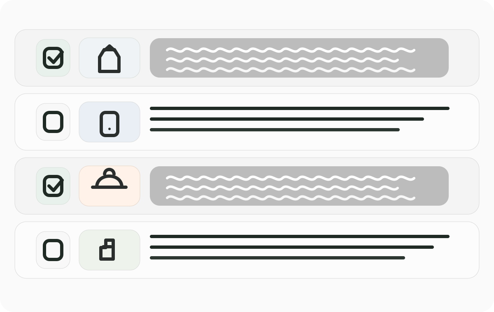

High-Volume Bulk Speed
Powered by DynamoDB caching for instant load times, regardless of catalog size. Run bulk edits across 100k+ products without freezing the workflow.
catalogIQ is built first for high-volume Shopify bulk edits: precise targeting, fast execution, and a 60-day bulk undo window when large catalog changes need to be rolled back safely.
Powered by DynamoDB caching for instant load times, regardless of catalog size. Run bulk edits across 100k+ products without freezing the workflow.
catalogIQ lets teams target bulk edits with filters, selections, and product or variant-level data rules without breaking ownership boundaries.
Every major bulk edit can be reversed inside a 60-day window, giving operators a safer way to recover from mistakes without resorting to spreadsheet cleanup.
catalogIQ is positioned around the core job merchants need most: confident bulk editing for large catalogs, with the controls to target the right products and the safety net to undo edits for 60 days.
Build logic-driven queries visually instead of wrestling with CSV exports or brittle tag workarounds. catalogIQ filters by attributes, product state, merchandising flags, and custom rules so teams can launch bulk edits without losing context.

catalogIQ turns product selection into a high-confidence bulk editing workflow. Teams can pick exact rows, edit standard fields or metafields in one place, and reverse bulk changes for up to 60 days if the catalog needs to be restored.
Every large change in catalogIQ is paired with recovery context. Teams can review recent bulk edit batches, understand what changed, and use the 60-day undo window to roll back edits without reconstructing the catalog manually.